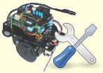

Del 10 al 16 de Febrero se está impartiendo el VI Taller de Robótica en la Escuela Politécnica Superior de la UAM. Los asistentes montarán y programarán el robot Skybot.
El Martes 16 se celebrará el tradicional concurso del mogollón!!! 😉
Jeje que recuerdos 🙂
casi gano un miniportatil! jaja
saludos!
Joe, que rabia no poder ir a veros!!!